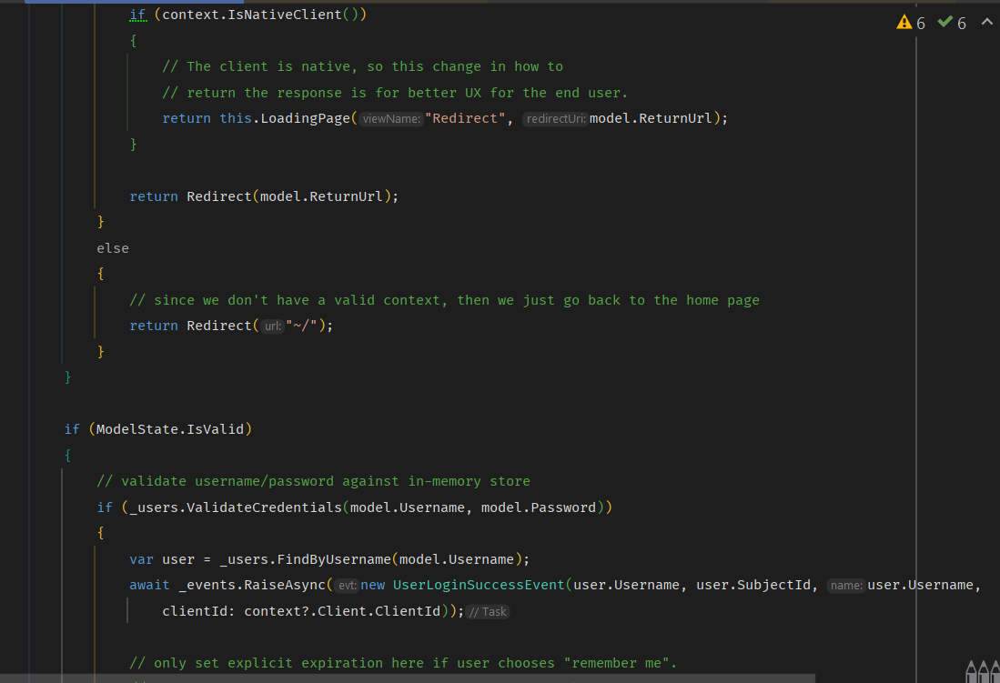
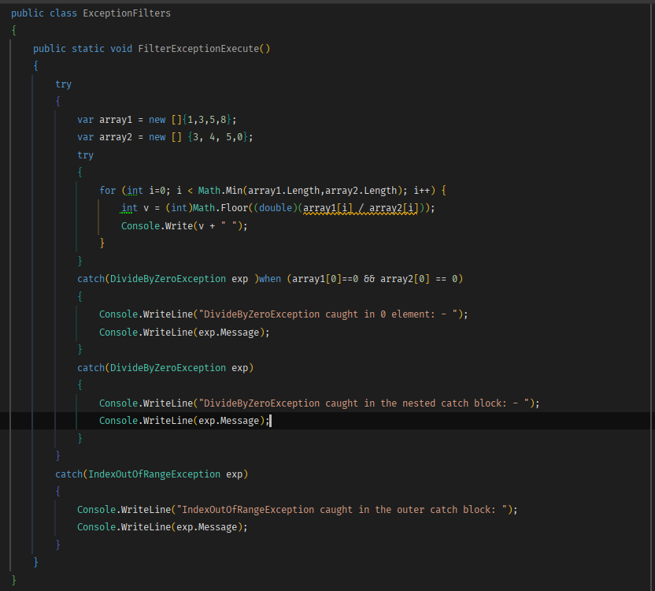
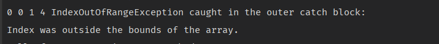

Тема: ВИКЛЮЧНІ СИТУАЦІЇ.
Мета : придбати практичні навички роботи з виключними ситуаціями, які виникають при роботі програми. Постановка задачі:-
До програмного коду попередн іх лабораторних робіт добавити та
описати:
- виключення, яке можуть виникати при некоректній авторизації;
- виключення, з застосуванянм фільтрів виключення;
- виключення, які виникають при обробці масивів ;
- системні виключення;
- власні виключення;
- протестувати програму. Зробити висновки
Місце розташування проекту.Середовище розробки
Місце розташування проекту.
Середовище розробки : Rider
3.1 Некоректна авторизація
Клас для логіки делегата
Приклад з генерацією помилки авторизації при введенні невалідних логіну та паролю
3.2 Фільтри виключень
Виключення при діленні

3.3 Виключення при обробці масивів
Обробка помилок
Вивід на консоль при обробцік

3.4 Системні виключення


InvalidCastException
InvalidCastException вивід на консоль
Обробка InvalidCastException
Обробка InvalidCastException вивід на консоль
ArgumentException,
ArgumentException,вивід на консоль
Обробка ArgumentException,
Обробка ArgumentException, вивід на консоль
NullReferenceException
NullReferenceException вивід на консоль
Обробка NullReferenceException
Обробка NullReferenceException вивід на консоль
АrgumentOutOfRangeException
АrgumentOutOfRangeException вивід на консоль
Обробка АrgumentOutOfRangeException
Обробка АrgumentOutOfRangeException вивід на консоль
3.5 Власні виключення
Класи виключень
Приклад використання
Вивід на консоль
Висновок: в ході виконання даної лаборатоної роботи я придбала
практичні навички роботи зі створенням виключень і їх обробкою.
Функції обробки виключень в мові C # допомагають вам впоратися з непередбаченими чи виключними проблемами, які виникають при виконанні програми. Вони дозволяють обробляти помилки так, як здається розумним, а також правильно вивільняти ресурси. При обробці виключень використовуються ключові слова try, catch і finally для дій, які можуть виявитися невдалими.